Noms latinsNoms françaisNoms vernaculairesSynonymesLe genre grammatical en BotaniqueCodes de nomenclature
Index
des noms français
Noms français pas encore standardisés.
A
B
C
D
E
F
G
H
I
J
K
L
M
N
O
P
Q
R
S
T
U
V
W
X
Y
Z
M 
-
Mâche (V. locusta subsp. locusta)
Mâche à carène (V. locusta f. carinata)
Mandragore
Manguier
Marguerite de la Saint-Michel
Marguerite des prés
Marjolaine bâtarde
Maroute
Marronnier commun,
Marronnier d'Inde
Massette à larges feuilles
Matricaire camomille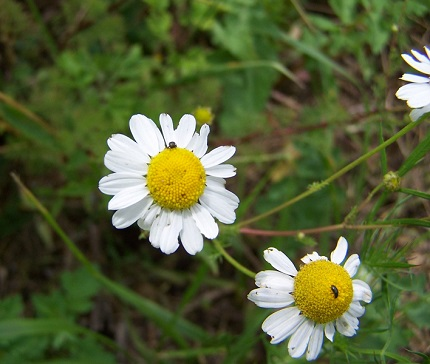
Juin 2011 Matricaire inodore
Matricaire sans ligules
Mauve Alcée
Mauve hérissée
Mauve musquée
Mélampyre à crêtes
Mélampyre des champs
Melampyre des prés
Mélèze
Mélilot blanc
Mélilot élevé
Mélilot jaune, mélilot officinal
Mélique à une fleur
Mélique ciliée
Mélique penchée
Mélitte à feuilles de mélisse
Menthe à feuilles rondes
Menthe aquatique
Menthe australienne
Menthe des champs
Menthe pouliot (polioust) *
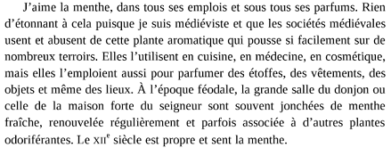
Un vert magnifique (août 2015) in Michel PASTOUREAU,
Une couleur ne vient jamais seule. La Librairie du XXIe siècle © Éditions du Seuil, octobre 2017. Ménianthe trifolié
Mercuriale annuelle
Mercuriale vivace
Merisier vrai
Métaséquoia de Chine
Millepertuis couché
Millepertuis velu
Millepertuis des marais
Millepertuis élégant
Millepertuis perforé
Millepertuis velu
Mille-pieds
Millet des oiseaux
Millet diffus
Mimule tachetée
Minuartie à feuilles menues
Minuartie à petites feuilles
Misopates rubicond
Mnie ondulée
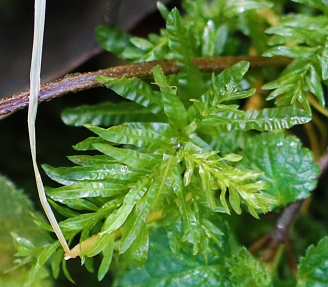
Moehringie trinervée
Molène à fleurs denses
Molène blattère
Molène bouillon-blanc
Molène lychnite
Molène floconneuse
Molène noire
Molène pulvérulente
Molinie bleue
Molinie roseau,
Molinie élevée
Monnoyère à feuilles embrassantes
Morelle douce-amère
Morelle noire
Mouron aquatique
Mouron bleu
Mouron des champs
Mouron des oiseaux
Mousse des jardiniers
Moutarde des champs
Moutarde noire
Muguet de mai
Muflier des champs
Muscari à grappes
Muscari à toupet
Muscari botryoïde
MyosotisDes myosotis aux fleurs pleines de nectar puisque les
collerettes des tubes de leurs corolles sont de couleur jaune orangé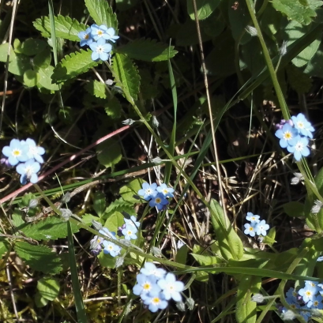
Ces collerettes deviendront blanches dès que
les fleurs auront été fécondées par les insectes butineurs.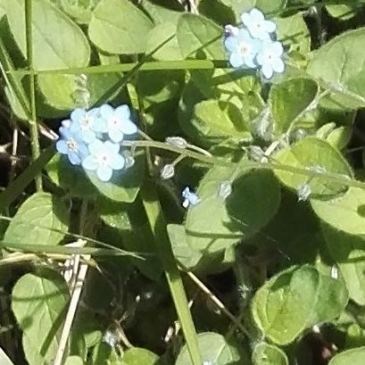
Myosotis des bois
Myosotis des champs
Myosotis des forêts
Myosotis des marais
Myrtille
Myrtillier
N
-
Naïade majeure,
Naïade marine
Narcisse des poètes
Néflier d'Allemagne
Néflier du Japon
Nénufar blanc
Nénufar jaune
Néotinée brûlée
Néottie nid d'oiseau
Nerprun cathartique
Nerprun purgatif
Neslie paniculée
Nielle des blés
Nigelle de Damas
Nigelle des champs
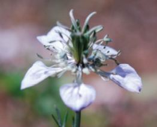
© Marc Douchin - AIB Noble épine
Noisetier
Noyer
Noyer noir
O
- Obier
Odontite de printemps
Odontite rouge
Œil-de-perdrix
Œillet Arméria
Œillet des chartreux
Œillette
Œnanthe à feuilles de Silaüs
Œnanthe fistuleuse
Œnanthe intermédiaire
Onagre bisannuelle
Ophioglosse
Ophrys abeille
Ophrys abeille à longs pétales
Ophrys araignée
Ophrys bourdon
Ophrys frelon
Ophrys litigieux
Ophrys mouche
Ophrys petite araignée
Ophrys verdissant
Oranger des Osages
Orchis à fleurs lâches
Orchis bouc
Orchis bouffon
Orchis brûlé
Orchis couleur de chair
Orchis de Fuchs,
Orchis de Meyer
Orchis de Traunsteiner
Orchis homme-pendu
Orchis incarnat
Orchis mâle
Orchis militaire
Orchis moucheron
Orchis pourpre
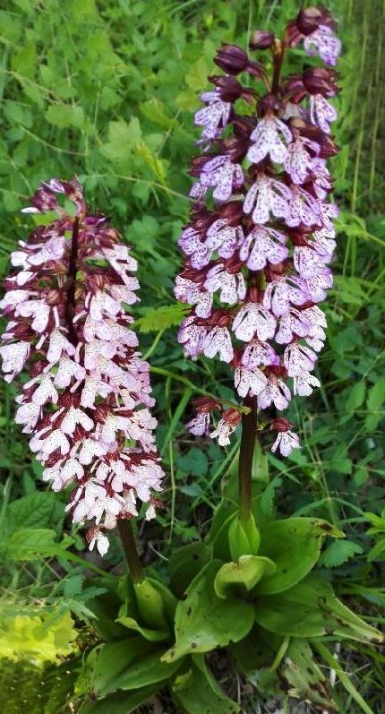
Mi-mai 2017 Orchis pyramidal
Orchis singe
Orchis tacheté
Orge des rats
Origan vulgaire
Orme blanc
Orme champêtre (homeau) *
Orme lisse, orme pédonculé
Ornithogale des Pyrénées
Ornithogale en ombelle
Ornithope délicat
Orobanche
Orobanche blanche
Orobanche d'Alsace
Orobanche de la picride
Orobanche du genêt
Orobanche du lierre
Orobanche du picris
Orobanche du thym
Orobanche pourprée
Orobanche violette
Orpin blanc
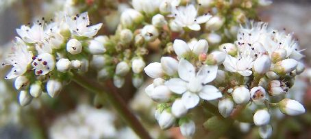
Noyers-sur-Serein, 22 juin 2016 Orpin brûlant
Orpin reprise
Ortie dioïque
Ortie royale
Oseille des prés
Osier rouge
Osmonde royale
Oxalide droit
Oxalis corniculée
Oxalis droit
Oxalis petite oseille
Oxybaside des villes
Oxybasis des villes
P
-
Pacanier
Panais, panais cultivé, panais sauvage
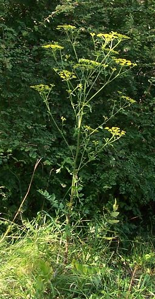
Pastinaca sativa L. Panicaut champêtre
Panicaut de mer,
Panicaut des dunes,
Panicaut maritime
Pâquerette vivace (margarites) *
Pariétaire de Judée
Parisette à 4 feuilles
Parmélie des murailles
Parnassie des marais
Passerage drave
Passerage des champs
Patience à feuilles obtuses
Patience sanguine
Patte d'ours
Pâturin annuel
Pâturin commun
Pâturin des bois
Pâturin des forêts
Paulownia
Pavot de Californie
Pavot douteux
Pavot officinal
Pavot somnifère
Pédiculaire des bois
Pédiculaire des forêts
Peigne de Vénus
Perce-neige (primeveize) *
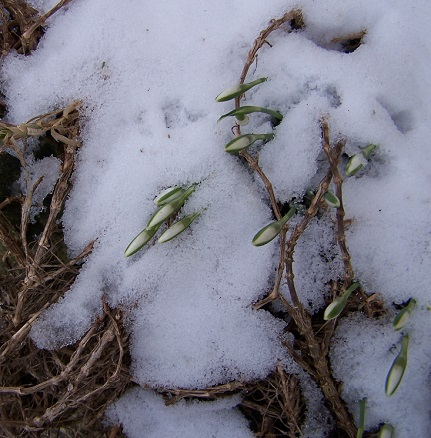
Lucy-sur-Cure, 17 février 2010 Persil des montagnes
Pesse, pesse d'eau
Pétasite hybride
Pétasite des Pyrénées
Petit boucage
Petit buglosse
Petit cocriste
Petit Éragrostis
Petit rhinante
Petite berle
Petite centaurée commune
Petite centaurée délicate
Petite ciguë
Petite coronille
Petite douve
Petite pervenche (prevanche) *
Petite pimprenelle
Petite scorsonaire
Peucédan de France,
Peucédan de Paris
Peucédan des marais
Peucédan herbe aux cerfs
Peuplier blanc
Peuplier tremble
Phacelie à feuilles de tanaisie
Phalangère à fleurs de lys
Phalangium rameux
Phénope des murs
Phléole des prés
Picride fausse Épervière
Picride (fausse) Vipérine
Pied de coq
Pigamon jaune
Piloselle gazonnante
Piloselle officinale
Pilulaire, pilulaire à globules
Piment royal
Pimpinelle saxifrage
Pimprenelle à fruits réticulés
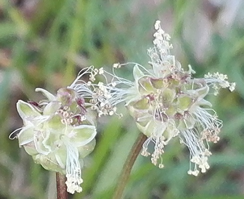
Ou petite pimprenelle
Avigny, 19 mai 2018 au déclin du jour Pin d'Orégon
Pin des Landes
Pin de Weymouth
Pin maritime, pin mésogéen
Pin noir d'Autriche
Pin sylvestre
Pirole unilatérale
Pissenlit
Pivoine mâle
Plantain d'eau à feuilles lancéolées
Plantain d'eau commun
Plantain lanceolé (herbe au char[penti]er) *
Plantain majeur
Plantain moyen
Platane à feuilles d'érable
Platane commun
Platanthère à deux feuilles
Platanthère à fleurs vertes
Podagraire
Poirier sauvage
Polygala amer
Polygale commun
Polygale des sols calcaires
Polypode vulgaire
Polystique à aiguillons
Polystic à frondes munies d'aiguillons
Polytric élégant
Pommier sauvage
Populage des marais
Porcelle enracinée
Potamot crépu,
Potamot à feuilles crépues
Potentille argentée
Potentille de Neumann
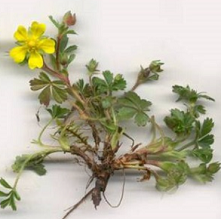
Ou potentille printanière Potentille des marais
Potentille dressée
Potentille faux fraisier
Potentille printanière
Potentille rampante
Potentille tormentille
Pourpier cultivé
Prêle des champs
Prêle d'Hiver
Prêle géante
Primevère d'Angleterre
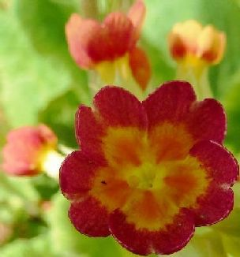
Primula x anglica Pax, 1889 Primevère des bois
Primevère officinale
Prunellier
Pulicaire dysenterique (paqueretez d'eau) *
Pulmonaire à feuilles longues
Merci à Marco Ponzi pour sa mise en ligne très botanique de cet ouvrage de Jean Bourdichon (vers 1468-1521), une mise en ligne que nous n'avons découverte qu'en 2024 et qui vient de nous aider à améliorer cette page.
Noms latinsNoms françaisNoms vernaculairesSynonymesLe genre grammatical en BotaniqueCodes de nomenclature
 | |